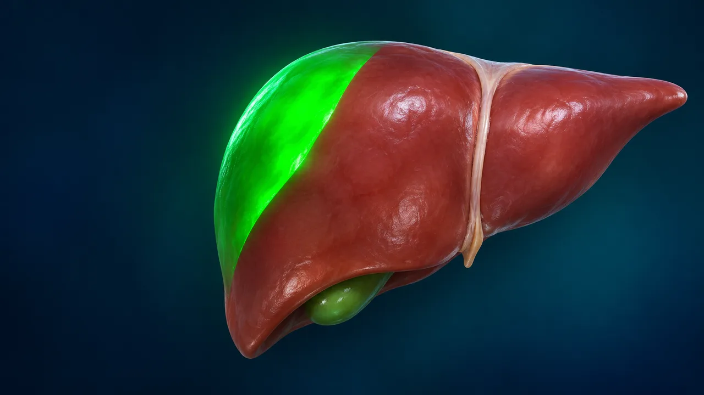
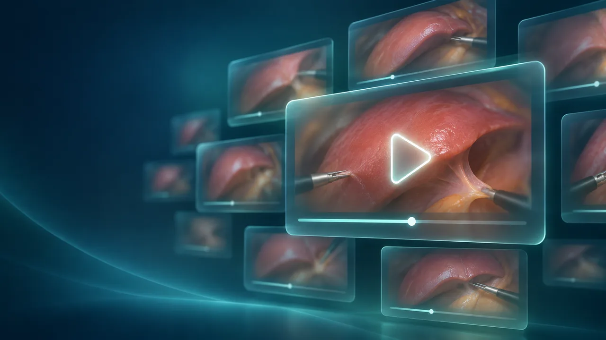

Opportunities참여 · 채용
Join the consortium컨소시엄에 함께하세요
Join as a participating center참여 기관으로 함께하기
Centers performing minimally invasive liver resection are welcome to contribute cases to the AI-MILS Registry and take part in consortium studies. We share a common data dictionary, case report form and analysis plan.미세침습 간절제를 시행하는 기관은 AI-MILS Registry에 증례를 등록하고 컨소시엄 연구에 참여할 수 있습니다. 공통 자료 사전, 증례기록서, 분석 계획을 공유합니다.
Clinical research fellows임상 연구 전임의
Fellows and residents interested in liver surgery outcomes research can join a study team, from data curation to statistical analysis and manuscript writing.간수술 성과 연구에 관심 있는 전임의·전공의는 자료 정리부터 통계 분석, 논문 작성까지 연구팀에 참여할 수 있습니다.
Proctorship & MIS training프록터십 · MIS 교육
Surgeons starting robotic or laparoscopic hepatectomy can apply for structured proctorship and the swine model training program.로봇·복강경 간절제를 시작하는 외과의는 체계적 프록터십과 돼지 모델 훈련 프로그램에 지원할 수 있습니다.
Engineering & AI collaborators공학 · AI 협력 연구자
We look for partners in medical imaging, 3D reconstruction, surgical video analysis and robotics to work on navigation and autonomy.의료영상, 3D 재구성, 수술 영상 분석, 로보틱스 분야에서 내비게이션과 자율성 연구를 함께할 파트너를 찾습니다.
To apply:지원 방법: send a short email describing your interest, background and the study you would like to join to관심 분야, 이력, 참여하고 싶은 연구를 간단히 적어 다음 주소로 보내 주세요: contact@example.org (placeholder)(임시 주소)
Collaboration topics협력 연구 주제
Automated 3D liver reconstruction from CTCT 기반 3D 간 자동 재구성
Segmentation of liver, vessels and tumours for preoperative planning, validated against surgeon-made models.수술 전 계획을 위한 간·혈관·종양 분할을 개발하고 외과의가 만든 모델과 비교 검증합니다. (contact문의)
Quantifying ICG fluorescenceICG 형광의 정량화
Measuring fluorescence demarcation and tumour staining in laparoscopic and robotic video.복강경·로봇 영상에서 형광 경계와 종양 염색을 정량적으로 측정합니다. (contact문의)
Surgical video annotation수술 영상 어노테이션

Phase and step labelling of hepatectomy videos to support education and autonomy research.교육 및 자율성 연구를 위해 간절제 영상의 단계(phase·step)를 라벨링합니다. (contact문의)
Autonomy level assessment자율성 단계 평가
Applying the autonomy framework to real cases and testing agreement between raters.자율성 프레임워크를 실제 증례에 적용하고 평가자 간 일치도를 검증합니다. (contact문의)
More topics are available on request.다른 주제도 문의 주시면 안내해 드립니다.